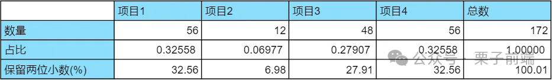

在实现隐藏弹窗或收起下拉框时，如果你还在一层层判断是否点击了某个元素之外的区域，赶紧试试使用 contains 方法来实现。
document.addEventListener("click", function (evt) {
// isClickedOutside 为 true 如果点击的元素在 ele 之外
const isClickedOutside = !ele.contains(evt.target);
});
除了在监听的事件函数中移除当前的监听外，也可以使用 once 参数。
const handler = function (e) {};
ele.addEventListener("event-name", handler, { once: true });
在展示音视频时长之类的场景时，需要把时长秒数格式为 HH:mm:ss 的格式。
const formatSeconds = (s) =>
[parseInt(s / 60 / 60), parseInt((s / 60) % 60), parseInt(s % 60)]
.join(":")
.replace(/\b(\d)\b/g, "0$1");
const getUrlParams = (query) =>
Array.from(new URLSearchParams(query)).reduce(
(p, [k, v]) =>
Object.assign({}, p, {
[k]: p[k] ? (Array.isArray(p[k]) ? p[k] : [p[k]]).concat(v) : v,
}),
{}
);
// 获取 query 参数
getUrlParams(location.query);
// { a: ['1', '4'], b: '2', c: '3' }
getUrlParams("?a=1&b=2&c=3&a=4");
// 获取 hash 参数
getUrlParams(location.hash.split("?")[1]);
看似平平无奇的打开页签，但是需要关注下 rel，如果要打开外链，建议设置为 noopener noreferrer，避免一些恶意网站通过 window.opener.location 重定向你的网站地址。window.open 方法同理。
<!-- 高版本浏览器 rel 默认为 noopener，不过建议显示设置，兼容低版本。 -->
<a target="_blank" rel="noopener noreferrer">...</a>
// window.open rel 默认为 opener，需要自己设置
window.open("https://baidu.com", "baidu", "noopener,noreferrer");
以下有安全漏洞，打开的新页签可以通过 window.opener.location 重定向你的网站
<a target="_blank" rel="opener">...</a>
window.opener.location = "http://fake.website.here";
通过 fileReader API 的 readAsDataURL 方法来显示上传图片。
function readImage() {
const fileReader = new FileReader();
const file = document.getElementById("uploaded-file").files[0];
if (file) {
fileReader.readAsDataURL(file);
}
fileReader.addEventListener(
"load",
() => {
const result = fileReader.result;
const resultContainer = document.getElementById("result");
const img = document.createElement("img");
img.src = result;
resultContainer.append(img);
},
{ once: true }
);
}
使用 a 标签的 download 属性，同源才能触发下载，IE 不支持，移动端兼容性也不太好。
<a href="/path/to/file" download>Download</a>
// 或者 js 临时生成 a
function download(url) {
const link = document.createElement("a");
link.download = "file name";
link.href = "url";
document.body.appendChild(link);
link.click();
document.body.removeChild(link);
}
静态资源服务器设置响应头也能触发浏览器下载。
Content-Disposition: attachment; filename="filename.jpg"
除了在线文件下载，你还可以创建一个 text 或 json 文件，并下载，主要用到了 Blob 对象和 createObjectURL 方法。
const data = JSON.stringify({ message: "Hello Word" });
const blob = new Blob([data], { type: "application/json" });
// 创建一个 URL
const url = window.URL.createObjectURL(blob);
// 用上面的 download 方法下载这个 url
// ...
// 释放创建的 URL
window.URL.revokeObjectURL(url);
缓存函数的结果，当计算比较复杂时可以使用。
const memoize = (fn) =>
(
(cache = Object.create(null)) =>
(arg) =>
cache[arg] || (cache[arg] = fn(arg))
)();
/* 前三个 */
li:nth-child(-n + 3) {
text-decoration: underline;
}
/* 选中 2-5 的列表项 */
li:nth-child(n + 2):nth-child(-n + 5) {
color: #2563eb;
}
/* 倒数两个 */
li:nth-last-child(-n + 2) {
text-decoration-line: line-through;
}
自定义滚动条样式也是很常见的需求，除了通过样式，也可以通过第三方库（如 better-scroll 等）来实现自定义滚动条样式。
/*定义滚动条高宽及背景 高宽分别对应横竖滚动条的尺寸*/
::-webkit-scrollbar {
width: 8px;
height: 8px;
}
/*定义滚动条轨道 内阴影+圆角*/
::-webkit-scrollbar-track {
border-radius: 10px;
background-color: #fafafa;
}
/*定义滑块 内阴影+圆角*/
::-webkit-scrollbar-thumb {
border-radius: 10px;
background: rgb(191, 191, 191);
}
/*较新的 API*/
body {
scrollbar-width: thin;
scrollbar-color: #718096 #edf2f7;
}
计算百分比时，由于四舍五入，各个比例相加可能不等于 1，通过最大余额法可以保证总数为 1。

// 输出 ['32.56%', '6.97%', '27.91%', '32.56%']
getPercentWithPrecision([56, 12, 48, 56], 2);
// 具体最大余额法算法可以网上搜索查看
function getPercentWithPrecision(valueList, precision) {
// 根据保留的小数位做对应的放大
const digits = Math.pow(10, precision);
const sum = valueList.reduce((total, cur) => total + cur, 0);
// 计算每项占比，并做放大，保证整数部分就是当前获得的席位，小数部分就是余额
const votesPerQuota = valueList.map((val) => {
return (val / sum) * 100 * digits;
});
// 整数部分就是每项首次分配的席位
const seats = votesPerQuota.map((val) => {
return Math.floor(val);
});
// 计算各项的余额
const remainder = votesPerQuota.map((val) => {
return val - Math.floor(val);
});
// 总席位
const totalSeats = 100 * digits;
// 当前已经分配出去的席位总数
let currentSeats = votesPerQuota.reduce(
(total, cur) => total + Math.floor(cur),
0
);
// 按最大余额法分配
while (totalSeats - currentSeats > 0) {
let maxIdx = -1; // 余数最大的 id
let maxValue = Number.NEGATIVE_INFINITY; // 最大余额, 初始重置为无穷小
// 选出这组余额数据中最大值
for (var i = 0; i < remainder.length; i++) {
if (maxValue < remainder[i]) {
maxValue = remainder[i];
maxIdx = i;
}
}
// 对应的项席位加 1，余额清零，当前分配席位加 1
seats[maxIdx]++;
remainder[maxIdx] = 0;
currentSeats++;
}
return seats.map((val) => `${(val / totalSeats) * 100}%`);
}
当有大量请求需要发起时，往往需求限制并发数量保证其他请求能优先返回。
async function asyncPool(poolLimit, iterable, iteratorFn) {
// 用于保存所有异步请求
const ret = [];
// 用户保存正在进行的请求
const executing = new Set();
for (const item of iterable) {
// 构造出请求 Promise
const p = Promise.resolve().then(() => iteratorFn(item, iterable));
ret.push(p);
executing.add(p);
// 请求执行结束后从正在进行的数组中移除
const clean = () => executing.delete(p);
p.then(clean).catch(clean);
// 如果正在执行的请求数大于并发数，就使用 Promise.race 等待一个最快执行完的请求
if (executing.size >= poolLimit) {
await Promise.race(executing);
}
}
// 返回所有结果
return Promise.all(ret);
}
// 使用方法
const timeout = (i) =>
new Promise((resolve) => setTimeout(() => resolve(i), i));
asyncPool(2, [1000, 5000, 3000, 2000], timeout).then((results) => {
console.log(results);
});
生成 uuid 的代码片段
const uuid = (a) =>
a
? (a ^ ((Math.random() * 16) >> (a / 4))).toString(16)
: ([1e7] + -1e3 + -4e3 + -8e3 + -1e11).replace(/[018]/g, uuid);
打开弹窗的时候，会发现背后的内容还是可以滚动，我们需要在弹窗出现时禁用滚动，在弹窗消失时恢复。
// 打开 Modal 时，禁止 body 滚动
document.body.style.overflow = "hidden";
// 恢复滚动
document.body.style.removeProperty("overflow");